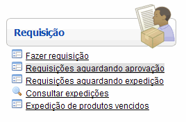
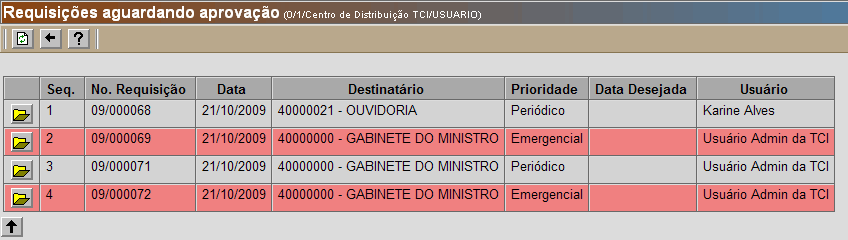
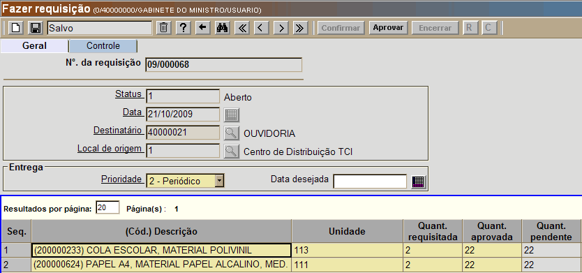

Aprovar Requisição [ Voltar ]Utilize este formulário para aprovar uma requisição existente. O formulário "Aprovar Requisição" se encontra dentro do menu "Consumo". 
O sistema abrirá a seguinte tela: 
Neste exemplo, há
quatro requisições aguardando aprovação. Para aprovar uma requisição,
execute os passos abaixo: 
2º Passo: confira os dados da requisição. A tela conterá todos os detalhes da requisição, incluindo "Local de origem", "Destinatário", "Prioridade", produtos requisitos e quantidades. Confirme a quantidade aprovada (por padrão é a quantidade requisitada, mas pode ser alterada). , 3º Passo: aprove a requisição. Após revisar todos os produtos e as quantidades para aprovação, aprove-a clicando no botão . |